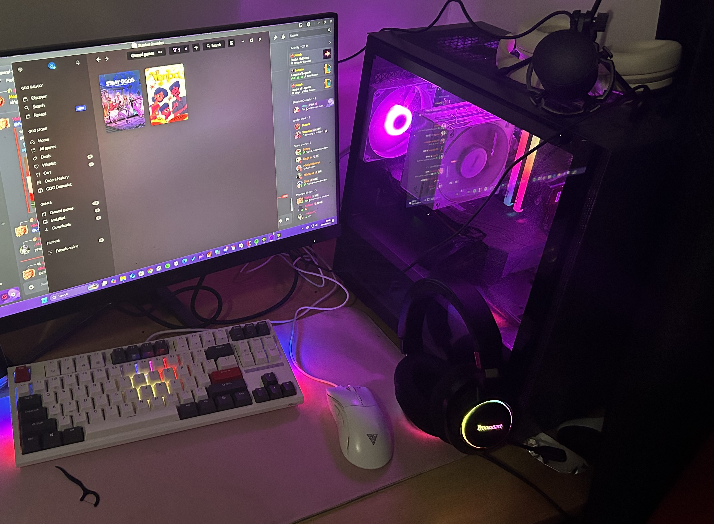
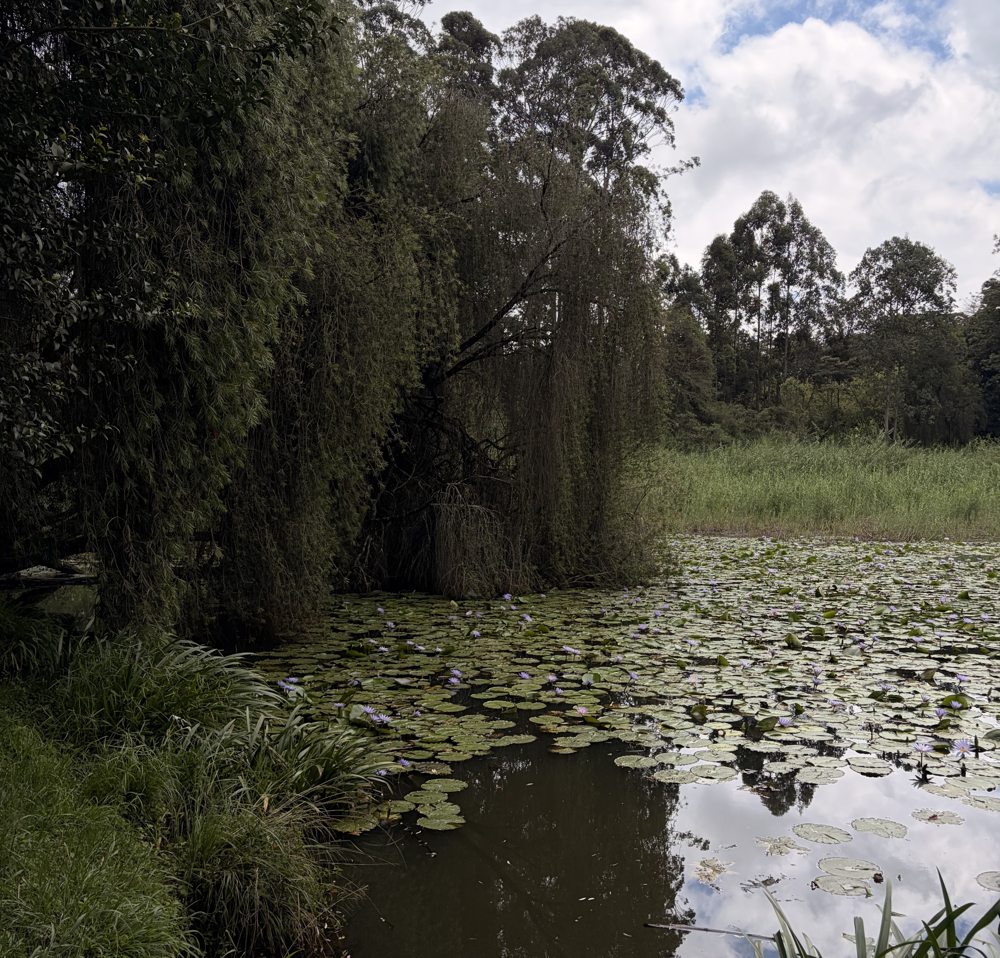
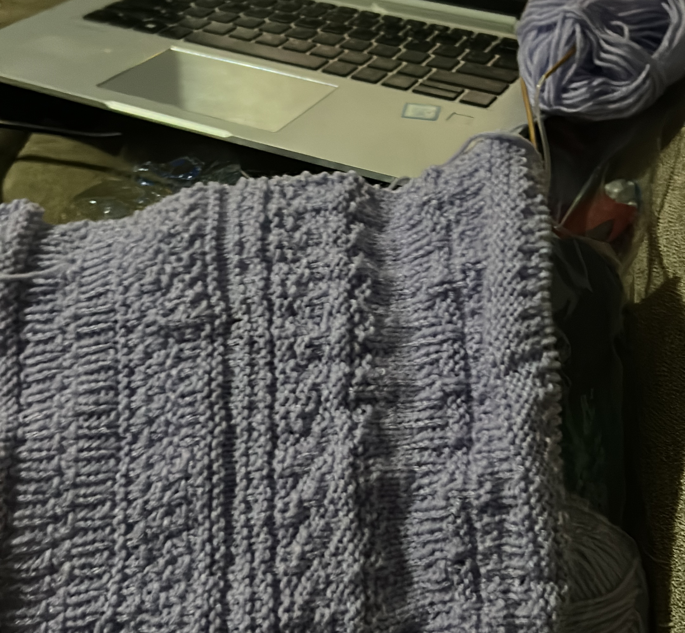

Gaming
i play a variety of games, from strategy to action-adventure. I also share gaming content on Instagram and TikTok.

i play a variety of games, from strategy to action-adventure. I also share gaming content on Instagram and TikTok.

i enjoy hiking in green spaces especially with the company of friends and family. A great hiking trail would be ololua and karura forest.

knit hats, sweaters, scarves and other accessories